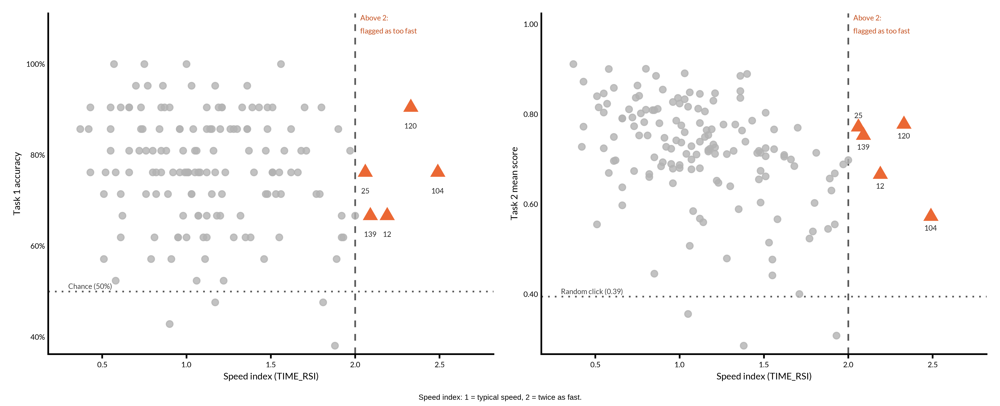
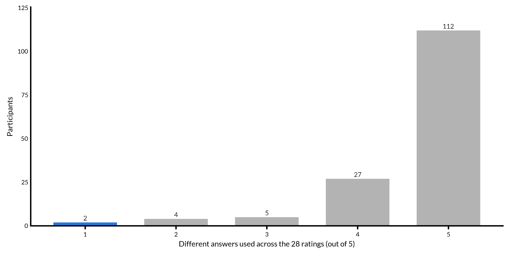

Two checks flag participants who may not have answered carefully. Flagged participants are kept in all main analyses; the Subjective evaluation page repeats the rating contrasts without them as a sensitivity analysis.
Too fast: 5 participants have a speed index above
Same rating everywhere: 2 participants gave the same rating to all 28 rating items.
7 participants are flagged in total.
Too fast: the speed index (TIME_RSI)
SoSci Survey compares each participant’s speed with the typical participant’s (Leiner, 2019):
On each page, the median time of all participants is divided by this participant’s time. A value of 2 means “twice as fast as typical on this page”.
Any value above 3 is counted as 3, so a single page skipped in a second does not decide the result.
where \(t_{ip}\) is participant \(i\)’s time on page \(p\), \(M_p\) is the median time of all participants on page \(p\), and \(P\) is the number of pages. Recomputing it this way from the page times of all 340 downloaded records reproduces SoSci’s values (correlation 1.000, mean absolute difference 0.002, i.e. rounding).
So 1 = typical speed, 2 = twice as fast. Leiner suggests treating values above 2.0 as suspicious, because such participants may not have read the questions. He also warns that speed is not a valid indicator when a questionnaire tests knowledge or skill, because experts are simply faster. Our tasks test experts’ perception, so the flag is only a hint. In this sample the median index is 1.12.
We flag values strictly above 2, as Leiner words it. One participant is exactly at 2 and is therefore not flagged (the dot on the dashed line in the figure).
Were the fast participants careless? The figure plots each participant’s speed index against their performance in both tasks.
Task 1 (two options, so guessing gives 50%): the 5 fast participants answered 67%–90% correctly (median of all participants: 76%).
Task 2 (score from 0 to 1; clicking a random region gives 0.39 on average): they scored 0.57–0.78 (median of all participants: 0.73).
All fast participants are above chance in both tasks, so they were fast but not guessing. Some of them are among the weaker participants in one task, which is why the flag is kept as a sensitivity check rather than ignored.
“thanks for putting this together! as a participant i feel like i've actually learned something”
25
2.06
76%
70
0.77
53
“I find the bivariate plots difficult to read and understand”
—
Ranks are among all 150 participants (1 = best).
Code
speed_panel <-function(y, y_label, chance, chance_label, y_labels, label_gap) {# ID labels go below each triangle, or above it when another flagged point sits# just below (otherwise the label would cover that point) labels <- speeders |>mutate(value = .data[[y]]) labels$above <-vapply(seq_len(nrow(labels)), \(k) { others <- labels[-k, ]any(abs(others$time_rsi - labels$time_rsi[k]) <0.08& others$value < labels$value[k] & others$value > labels$value[k] -2.5* label_gap) }, logical(1)) labels <-mutate(labels,label_y =if_else(above, value + label_gap, value - label_gap),label_vjust =if_else(above, 0, 1) )ggplot(quality_plot_data, aes(time_rsi, .data[[y]])) +geom_vline(xintercept = speed_cutoff, linetype ="dashed", colour ="grey35") +geom_hline(yintercept = chance, linetype ="dotted", colour ="grey35") +annotate("text", x = speed_cutoff +0.03, y =Inf,label =sprintf("Above %s:\nflagged as too fast", speed_cutoff),hjust =0, vjust =1.1, size =5.5, colour ="#c4501f", lineheight =0.8) +annotate("text", x =0.3, y = chance, label = chance_label,hjust =0, vjust =-0.5, size =5.5, colour ="grey25") +geom_point(data =filter(quality_plot_data, !speeding),colour ="grey70", size =3, alpha =0.8) +geom_point(data = speeders, colour ="#eb6834", shape =17, size =5.5) +geom_text(data = labels, aes(y = label_y, label = ID, vjust = label_vjust),size =5.5, colour ="grey15") +expand_limits(x =c(0.3, max(2.7, speed_cutoff +0.7)),y = chance -2* label_gap) +scale_x_continuous(breaks =seq(0.5, 2.5, 0.5)) +scale_y_continuous(labels = y_labels, expand =expansion(mult =c(0.03, 0.18))) +labs(x ="Speed index (TIME_RSI)", y = y_label) +plot_theme(base_size =20) +theme(axis.ticks.y =element_blank())}speed_panel("task1_accuracy", "Task 1 accuracy", 0.5, "Chance (50%)", scales::label_percent(), 0.035) +speed_panel("task2_score", "Task 2 mean score", task2_chance_score,sprintf("Random click (%.2f)", task2_chance_score), scales::label_number(accuracy =0.01), 0.02) + patchwork::plot_annotation(caption ="Speed index: 1 = typical speed, 2 = twice as fast.",theme =theme(plot.caption =element_text(size =16, hjust =0.5)) )

Each dot is one participant. Orange triangles are the participants flagged as too fast, labelled with their ID.
Leiner, D. J. (2019). Too fast, too straight, too weird: Non-reactive indicators for meaningless data in internet surveys. Survey Research Methods, 13(3), 229–248. https://doi.org/10.18148/srm/2019.v13i3.7403 (speed index: Section 4; cutoff and the caveat on knowledge questions: p. 242).
Same rating everywhere
Each participant rated the 7 visualizations on 4 questions, 28 ratings on a 1–5 scale. A participant who gives every one of them the same answer has not told the visualizations apart, which can mean they stopped reading the questions (“straight-lining”; Leiner, 2019).
The figure counts how many of the five possible answers each participant used across their 28 ratings. Almost everyone used several; 2 participants used only one:
Code
straight_liner_values |>transmute( ID, only_value,pct(task1_accuracy), task1_rank,sprintf("%.2f", task2_score), task2_rank, feedback_vis, feedback_general ) |>kable_grouped(c("ID", "Rating given to all items", quality_table_columns), quality_table_groups, quality_table_align)
Task 1 accuracy
Task 2 score
Feedback
ID
Rating given to all items
Accuracy
Rank
Score
Rank
On the visualizations (A305)
General (A306)
91
3
67%
113
0.56
136
—
—
133
5
48%
147
0.71
85
—
—
Ranks are among all 150 participants (1 = best); chance is 50% in Task 1 and 0.39 in Task 2. A constant middle rating (3) can also mean “no preference”; a near-chance task score and no written feedback make carelessness more plausible.
Code
rating_variety |>count(n_values) |> tidyr::complete(n_values =1:5, fill =list(n =0)) |>mutate(flagged = n_values ==1) |>ggplot(aes(factor(n_values), n, fill = flagged)) +geom_col(width =0.7) +geom_text(aes(label = n), vjust =-0.4, size =6, colour ="grey15") +scale_fill_manual(values =c(`TRUE`="#2a78d6", `FALSE`="grey70"), guide ="none") +scale_y_continuous(expand =expansion(mult =c(0, 0.12))) +labs(x =paste("Different answers used across the", length(rating_item_columns),"ratings (out of 5)"),y ="Participants" ) +plot_theme(base_size =20) +theme(axis.ticks.y =element_blank())

The blue bar holds the participants flagged for giving the same rating everywhere.
Summary of the quality-control results
Flagged participants. 7 of 150 participants: 5 with a speed index above 2 and 2 who gave the same rating to all 28 rating items (no participant is flagged by both checks).
Too fast. The fast participants answered 67%–90% of the Task 1 trials correctly (chance 50%) and had Task 2 mean scores of 0.57–0.78 (random click 0.39). All of them are above chance in both tasks: fast, but not guessing.
Same rating everywhere. The constant ratings were 3 and 5. These participants answered 48%–67% of the Task 1 trials correctly and had Task 2 mean scores of 0.56–0.71. Not all of them are above chance in both tasks (see the table).
What was done. No participant was excluded: all flagged participants are kept in every main analysis. The Subjective evaluation page repeats the rating contrasts without them as a sensitivity analysis.